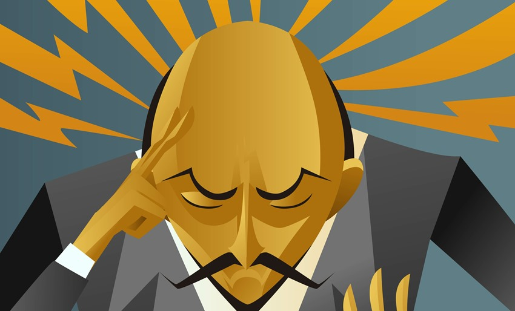

CartoMagia
In questi ultimi anni mi sono appassionato alla cartomagia.
Nei miei video voglio trasmettervi questa mia passione! Pian piano sto crescendo in questo ambito.

Mentalismo
Dopo la cartomagia mi sta piacendo molto anche il mentalismo.
Questa è un'arte molto particolare, che la sto scoprendo sempre di più!
